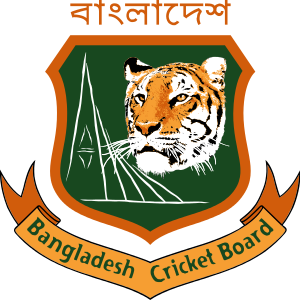

 The Bangladesh Cricket Board was founded in 1972 as the Bangladesh Cricket Control Board.[5] Its first constitution was drafted in 1976.[6] The board changed its name, dropping "control" from its title, in January 2007.[7] The board also controls the team's sponsorship. Since 2003 telecommunications company Grameenphone has sponsored the men and women's national teams. Between 2007 and 2011 they invested ৳151.5 million (US$1.8 million) in developing sport in the country.[8] In 2006 the Board established an academy to encourage the development of young and inexperienced players.[9] The Board issues central contracts to the national players and issuing match fees. In 2005 players were given about $1,000 for each Test they played and $500 per ODI.[10].Cricket flourished in Bengal during the British era. Centering Calcutta, cricket gained a lot of popularity among the general mass. This led to the evolution of cricket over the years in West Bengal as well as present Bangladesh.The earliest match of note in Dhaka was in February 1941 when a Bengal Governor's XI played the Bengal Gymkhana at the Bangabandhu National Stadium then called the Dacca Stadium.After the partition of Bengal in 1947, matches of domestic cricket in Pakistan were conducted in four leagues. Regional East Bengali of Pakistan teams regularly took part in the first-class Quaid-e-Azam trophy from 1954 through 1968. 1955–1969: Seven international Test matches with Pakistan participating as the host team were played in Dhaka between 1955 and 1969. The first test was held between Pakistan and the Republic of India in January 1955. The match started on the first day of the year. The newly built Dacca Stadium (now “Dhaka”-Bangabandhu National Stadium) then had the maximum capacity of accommodating 15,000 spectators.The next match at the Bangabandhu National Stadium was played between Pakistan and New Zealand from 7 to 12 November the same year. The third Test was played at the Bangabandhu National Stadium between Pakistan and West Indies in March 1959. Then came Australia in the November of the same year under the leadership of Richie Benaud. The fifth Test at the Bangabandhu National Stadium was played in January 1962 between Pakistan and England. The next match was also played between Pakistan and England after seven years in February 1969. The last, but not the least, Test between Pakistan and New Zealand was played in November of the same year.The Bangladesh Cricket Control Board is established. Soon after, a cricket league commences in Dhaka and Chittagong. It is a slow start, other things having priority in the war-torn country. Early in 1975 the Dhaka (then “Dacca”) stadium was still in disrepair, the square having sunk several inches and the Press Club shell-torn.A national level cricket tournament begins in the country. 1st division and 2nd division cricket leagues start at the districts level. Other tournaments that were organized included National Youth Cricket, Inter-university Cricket, College & School Cricket, Shahid Smriti Cricket, Damal Summer Cricket and Star Summer Cricket.On 26 July, 1977, Bangladesh becomes an Associate member of the I.C.C. The BCCB seeks coaching help from the MCC. The MCC sends Bangladesh her first foreign cricket coach, an Englishman named Robert Jones.
Copyright © 2022. Al rights reserved by Bangladesh Cricket Board